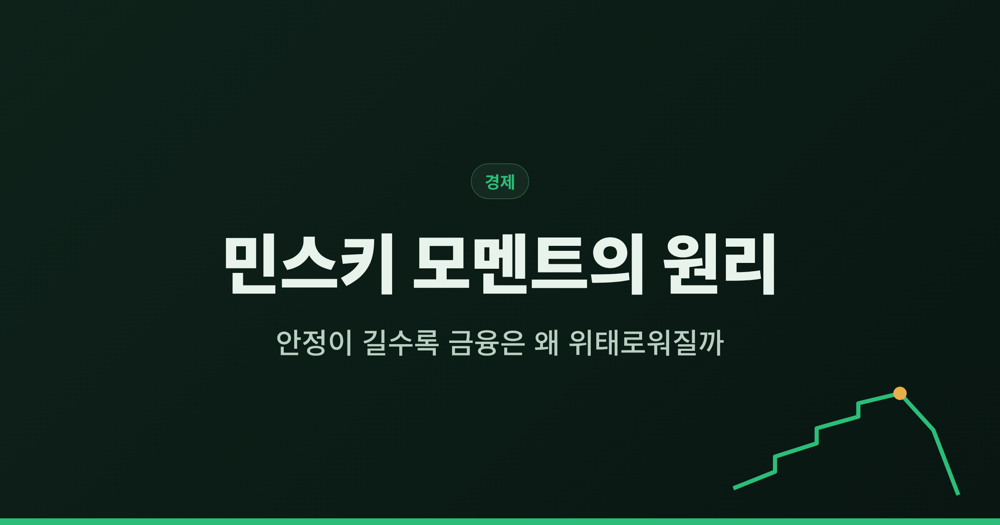
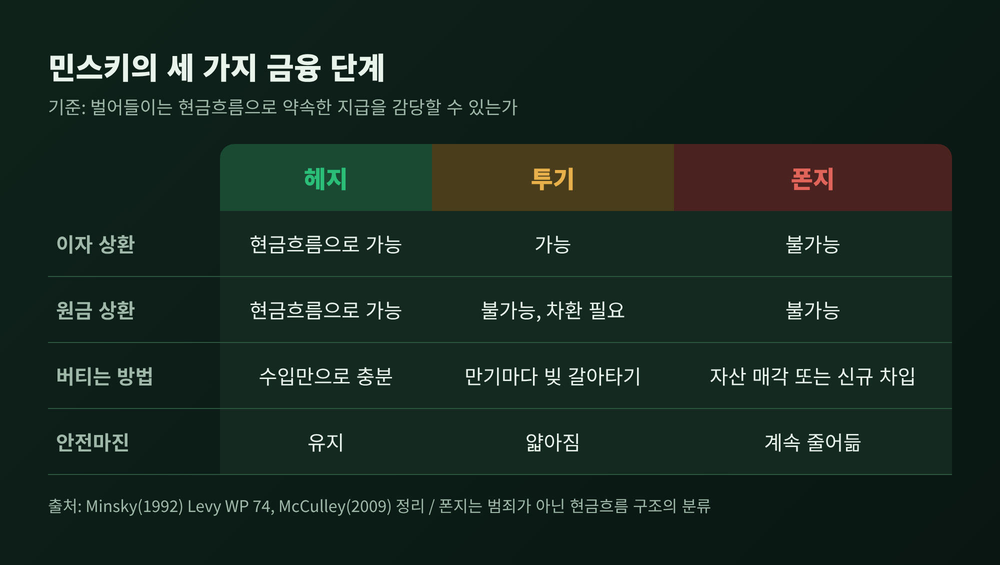
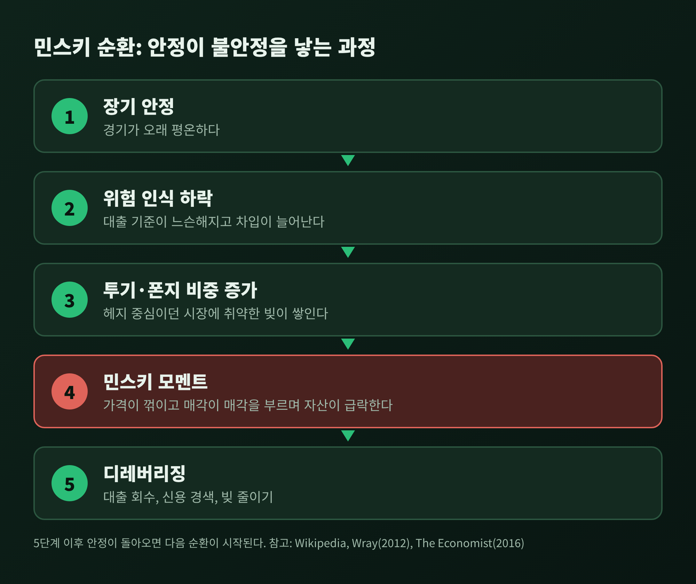
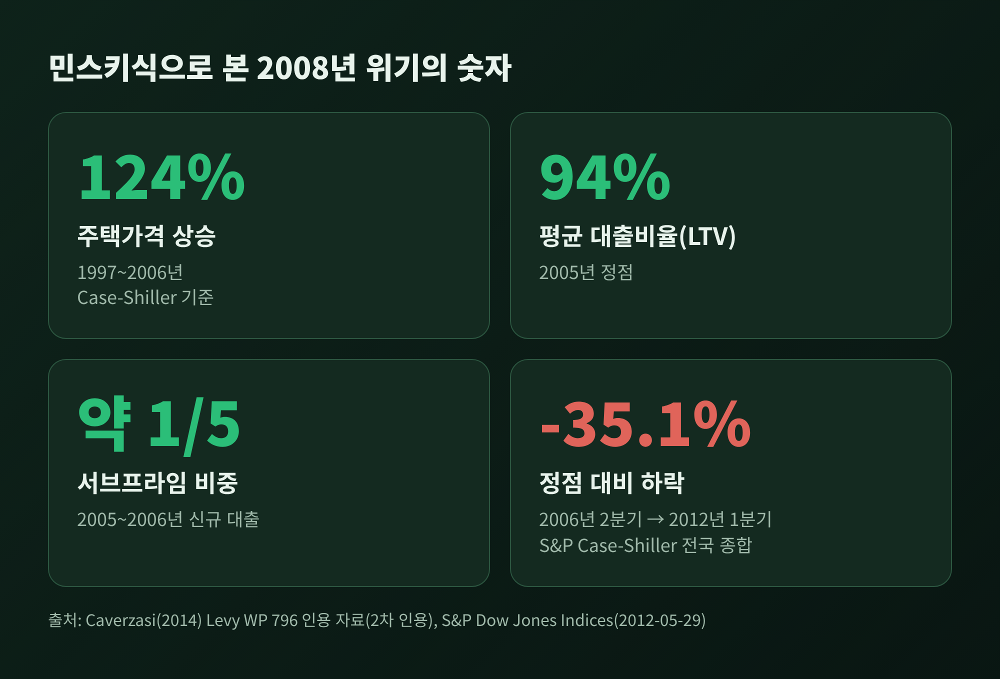
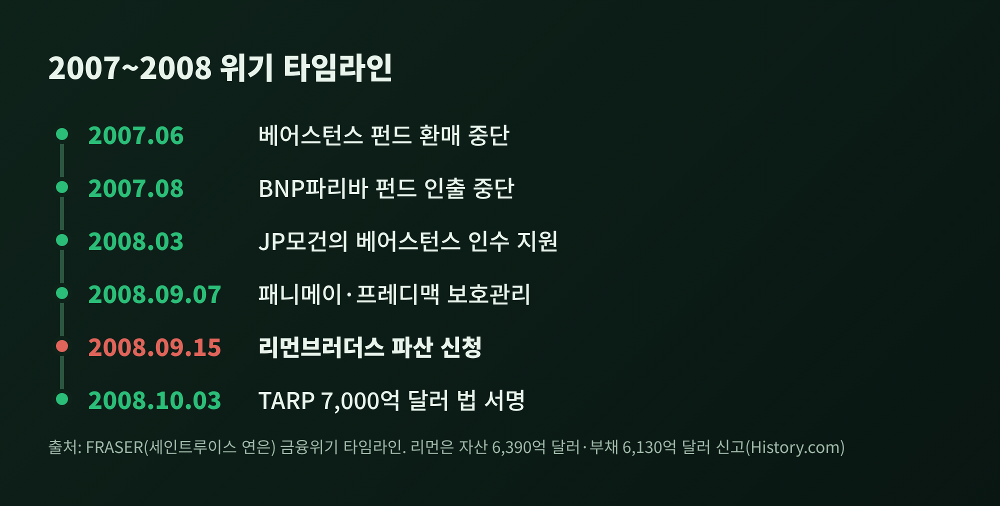
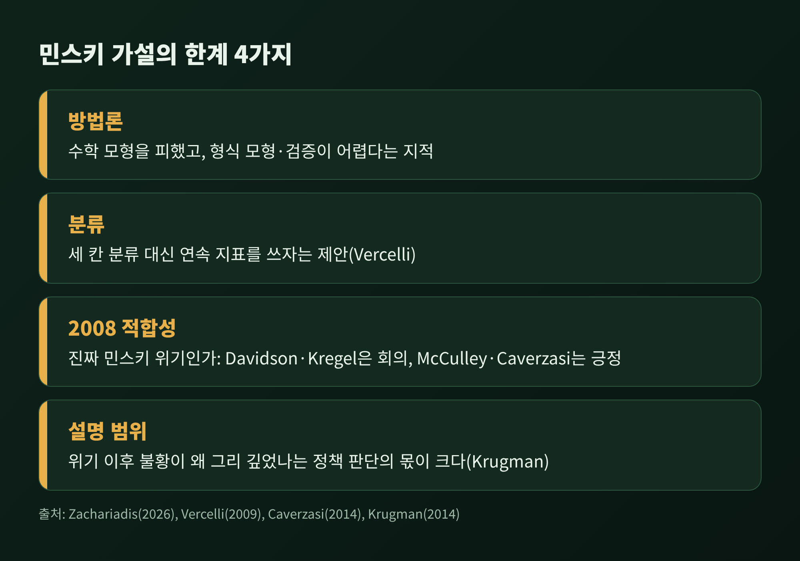

오늘은 하이먼 민스키의 금융불안정성 가설과 '민스키 모멘트'에 대해 이야기해 보려 합니다.
핵심은 한 줄입니다. 경기가 오래 평온하면 빚의 구조가 서서히 약해지고, 어느 순간 자산 가격이 한꺼번에 무너질 수 있다는 것입니다.
2008년 금융위기에 어떻게 적용되는지, 그리고 이 가설에 어떤 한계가 있는지까지 함께 정리하겠습니다.
하이먼 민스키(1919~1996)는 미국의 경제학자입니다.
하버드에서 슘페터에게 배웠고, 오랫동안 워싱턴대 세인트루이스에서 가르쳤습니다.
『존 메이너드 케인스』(1975)와 『불안정한 경제의 안정화』(1986)가 대표 저서입니다.
그의 주장은 단순합니다. 금융 불안정은 외부 충격 때문에 생기는 사고가 아니라, 시장 안에서 저절로 쌓인다는 것입니다.
전문 용어로는 '내생적 불안정'이라고 부릅니다.
번영이 길어질수록 경제가 안정적인 금융 관계에서 불안정한 관계로 옮겨간다는 대목을 민스키는 1992년 논문에서 직접 서술했습니다.
그의 이론은 수십 년간 주류 경제학에서 거의 주목받지 못했습니다.
수학 모형 대신 대차대조표와 서술로 풀어낸 방식이 주류 모형과 잘 맞지 않았기 때문입니다.
관심이 되살아난 것은 2008년 서브프라임 위기 이후였습니다.
민스키는 차입자를 현금흐름으로 구분했습니다.
기준은 하나입니다. 벌어들이는 돈으로 약속한 지급을 감당할 수 있는가.

여기서 '폰지'는 범죄를 뜻하지 않습니다. 현금흐름 구조를 가리키는 분류일 뿐입니다.
다만 폰지 단계의 차입자는 자산 가격이 계속 오르거나 대출이 계속 이어져야 버틸 수 있습니다.
어느 한쪽이 꺾이면 구조가 곧바로 흔들립니다.
민스키 논리에서 가장 낯선 부분이 이 대목입니다.
평온이 길어지면 사람들은 위험을 낮게 봅니다. 대출 기준은 느슨해지고 차입은 늘어납니다.
헤지 중심이던 시장에서 투기와 폰지의 비중이 조금씩 커집니다.
레비경제연구소의 랜덜 레이는 이를 확장기마다 투기적·폰지 포지션의 비율이 계속 올라가는 과정으로 정리했습니다.

그러다 금리가 오르거나 가격이 한 번 꺾이면 상황이 바뀝니다.
투기 단위는 차환이 막혀 폰지 단위로 떨어지고, 빚을 갚으려는 매각이 자산 가격을 더 끌어내립니다.
대출은 회수되고 매수자는 사라집니다. 가격과 유동성이 동시에 급락합니다.
이 급락 지점을 '민스키 모멘트'라고 부릅니다.
재미있는 점은 이 용어를 민스키가 만들지 않았다는 사실입니다.
핌코의 폴 매컬리가 1990년대 말 위기를 설명하며 붙인 이름입니다.
위키백과와 이코노미스트는 1998년 러시아 위기라고 하고, 매컬리 본인은 2009년 글에서 아시아 신용위기를 되돌아보며 만들었다고 적었습니다. 출처에 따라 설명이 조금 다릅니다.
이코노미스트는 한 가지 구분도 짚었습니다.
민스키 모멘트는 순간의 붕괴를 가리키지만, 민스키의 가설은 그 앞에 놓인 느린 취약성의 누적을 설명하는 이론이라는 점입니다.
먼저 안정기가 있었습니다.
버냉키는 2004년 연설에서 1980년대 중반 이후 거시 변동성이 크게 줄었다고 짚었습니다.
분기 실질 성장률의 변동성은 절반으로, 인플레이션 변동성은 약 3분의 2 줄었다는 연구를 인용했습니다.
1984년 이후 침체는 두 번뿐이었고, 1990년대 확장은 기록상 가장 길었습니다.

예전엔 위험이 낮아 보였고, 그 뒤에서 빚이 쌓였습니다.
카베르자시(2014)가 인용한 자료를 보면 케이스-실러 지수로 주택가격은 1997년부터 2006년까지 124% 올랐습니다.
평균 대출비율은 2005년 94%까지 올랐고, 서브프라임은 2005~2006년 신규 대출의 약 5분의 1을 차지했습니다.
집값이 계속 오른다는 기대에 기대는 가계가 늘었습니다. 카베르자시는 이를 가계가 폰지 단위가 된 것으로 해석했습니다.
여기에 규제 바깥의 섀도뱅킹이 얹혔습니다.
매컬리는 이들이 단기 무보험 자금으로 조달하면서도 중앙은행 대출창구와 예금보험이라는 안전망이 없었다고 설명합니다.
투자자는 과거에 안전했다는 이유로 이 자금을 예금처럼 다뤘습니다.
붕괴는 순서대로 이어졌습니다.

매컬리는 2007년 8월을 민스키 모멘트로 짚었습니다. 앞뒤로 석 달은 따지지 않겠다는 단서와 함께입니다.
2008년 9월 15일 리먼브러더스는 자산 6,390억 달러, 부채 6,130억 달러를 신고하며 파산했습니다.
다음 날 연준은 AIG에 최대 850억 달러 대출을 승인했고, 10월에는 7,000억 달러 규모의 부실자산구제프로그램이 법으로 만들어졌습니다.
주택가격은 2006년 2분기 정점에서 2012년 1분기까지 35.1% 내렸습니다.
민스키는 2008년 이후 크게 재조명되었지만, 비판도 만만치 않습니다.

첫째, 방법론입니다. 논문들은 미시적 기초가 없고, 형식 모형과 검증이 어렵다는 지적을 정리합니다. 민스키가 수식을 피한 탓에 주류 모형에 들어가기 어려웠다는 평가와 맞닿습니다.
둘째, 분류의 거칠기입니다. 베르첼리(2009)는 헤지·투기·폰지의 세 칸 대신 각 차입자의 재무 상태를 연속적으로 재는 지표를 쓰자고 제안했습니다.
셋째, 2008이 정말 민스키 위기였는가 하는 논쟁입니다.
데이비슨은 비유동 자산의 증권화가 핵심이라며 회의적이었습니다.
크레겔은 대출자·평가자·위험 보유자가 갈라진 구조 변화를 원인으로 봤습니다.
반면 매컬리와 카베르자시는 민스키의 틀이 위기를 잘 설명한다고 봅니다.
넷째, 설명의 범위입니다.
크루그먼은 민스키식 해석만으로는 2008년 이후 불황이 왜 그렇게 깊었는지 설명되지 않는다고 말합니다. 약한 재정 부양과 긴축 같은 정책 판단의 몫이 크다는 것입니다.
그러면서도 "이제 우리는 모두 민스키주의자"라고 평가했습니다.
덧붙일 점이 하나 있습니다.
이 가설은 위기의 구조를 알려 주지만, 언제 터지는지를 알려 주는 도구는 아닙니다. 이 부분은 소스에서 직접 확인된 문장은 아니고 제 해석입니다.
또 이코노미스트는 금융체계가 미성숙한 나라에 그대로 적용하는 것은 민스키가 의도한 범위를 넘는다고 지적했습니다.
마지막으로 한 가지만 덧붙이겠습니다.
민스키가 남긴 것은 완성된 예측 모형이 아니라 질문입니다. 평온한 시기에 빚은 어디에서 어떻게 쌓이고 있는가.
정리하면 이렇습니다.
세 단계 분류는 빚의 질을 보는 눈이고, 민스키 모멘트는 그 질이 한꺼번에 드러나는 순간입니다.
그리고 이 가설은 유용한 렌즈이지만 모든 것을 설명하는 열쇠는 아닙니다.
이 글은 이론을 설명하기 위한 것이며, 특정 자산에 대한 투자 판단을 권하지 않습니다.
다음에 시장이 유난히 조용하다고 느껴진다면, 그 평온이 무엇 위에 서 있는지 한 번쯤 따져 보시길 권합니다.
참고: 민스키(1992) Levy WP 74, 레이(2012) 레비연구소, 카베르자시(2014) WP 796, 베르첼리(2009) WP 579, 매컬리(2009) CFA Institute, 버냉키(2004), 크루그먼(2014) NYRB, 이코노미스트(2016), FRASER 금융위기 타임라인, S&P 케이스-실러 보도자료(2012)